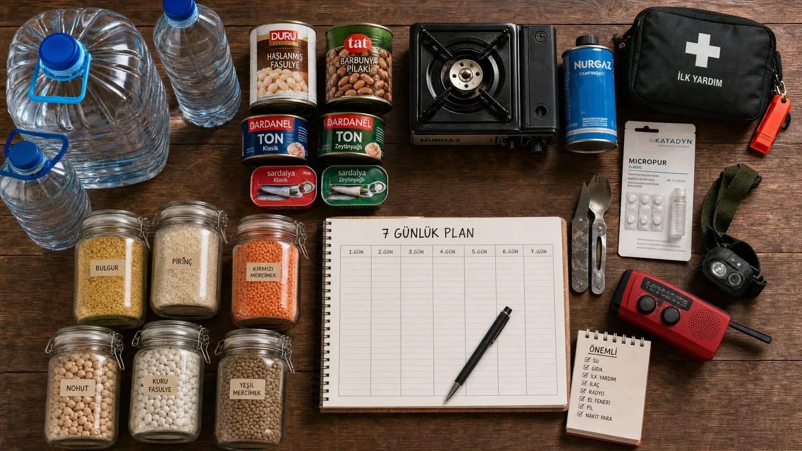

Deprem Sonrası Gıda Saklama ve Su Temini Rehberi 2026
Deprem sonrası ilk 72 saat 'kayıp dönemi' olarak adlandırılır — yardım ekiplerinin ulaşma süresi. Bu sürede ailenizi besleyebilmek için doğru gıda saklama ve su temini stratejisi hayati önem taşır. Bu rehberde 7 günlük afet beslenme planı detaylanıyor.
Deprem Sonrası Kaç Günlük Gıda Stoğu Gerekir?
AFAD ve Kızılay'ın resmi tavsiyesi en az 7 günlük gıda stoğudur. Önceki yaklaşımlar 3 gün öneriyordu, ancak Kahramanmaraş depremi sonrası 7-10 gün makul sürenin alt limit olduğu netleşti. Hatay gibi izole bölgelerde yardım 5-7 gün sonra ulaşabildi.
Aile başına temel hesap: 4 kişilik aile için 7 gün = 14.000 kalori (yetişkin başı 2.000 kcal/gün × 4 kişi × 7 gün ÷ 4). Bu kuru gıdada 3-4 kg/kişi tutar.
Uzun Raf Ömürlü Gıdalar: En İyi Seçenekler
Önceliğe göre stoklama listesi:
Tier 1 (mutlaka): Konserve fasulye, tonbalığı, sardalya (5 yıl raf), bal (sınırsız), kuru baklagiller (5 yıl), pirinç (3 yıl), bulgur (3 yıl), şeker, tuz.
Tier 2 (yüksek öncelik): Kraker, ekmek tozu (1 yıl), bisküvi, kuru meyve (1 yıl), kuru et (jerky), peynir (paketli), zeytin.
Tier 3 (lüks): Kahve, çay, çikolata, kondansebebek (uzun ömürlü süt).
Her ürünün üzerine satın alma tarihini yazın. 'İlk giren ilk çıkar' prensibiyle eskiyi günlük kullanın, yenisini stoğa katın.
Gıdaları Depolamanın Doğru Yöntemleri
Doğru depolama 4 prensipten oluşur:
(1) Karanlık: Işık yağ ve vitaminleri okside eder. Dolap içi veya rafa karton kutu içinde.
(2) Serin: 15-20°C ideal. Mutfak değil, soğuk depo veya garaj. Buzdolabı sadece açık ürünler için.
(3) Kuru: %50 nem altı. Sili-jel paket ekleyin, küflenmeyi önler.
(4) Hayvanlardan korumalı: Fareler ve böcekler depolamayı bozar. Plastik konteyner veya cam kavanozlarda saklayın.
Su: Kişi Başına Günlük Ne Kadar Stoklanmalı?
AFAD: Kişi başı günde 4 litre su (içme + temizlik + yemek pişirme). 4 kişilik aile için 7 gün = 112 litre. Bu 25 adet 5 litrelik damacana = 1 metrekare alan.
Hijyen suyu ayrıca: kişi başı günde 1 litre (banyo, tuvalet). Bu su içme suyu kalitesinde olmak zorunda değil — yağmur, kuyu suyu vb.
Su stoğu 6 ayda bir yenilenmelidir. Plastik ambalaj uzun süre güneşte kalırsa sızıntı yapar.
Su Arıtma ve Sterilizasyon Yöntemleri
Stok bittiğinde su arıtma yöntemleri:
(1) Kaynatma: 1-3 dakika kaynatma çoğu mikrobu öldürür. Yüksek rakımda (>2000m) 3-5 dakika gerekir.
(2) Klorlama: Çamaşır suyu (sodyum hipoklorit %5) — 1 litre suya 4 damla. 30 dakika beklemek gerekir.
(3) İyot tableti: 1 tablet/litre, 30 dakika. Hamile kadınlar ve tiroid hastaları kullanmamalı.
(4) UV sterilizasyon (Steripen vb.): 90 saniye. Pil gerekiyor.
(5) Filtre (LifeStraw vb.): Bakterileri tutar, ama virüsleri tutmaz. Klorla birlikte kullanın.
Afet Sonrası Musluk Suyu İçilir mi?
Genellikle hayır. Deprem sonrası şehir suyu altyapısı zarar görmüş olabilir. Kanalizasyon sızıntıları, kontamine kuyu suyu karıştırması, basınç düşüklüğüyle geri akış riski vardır.
Belediye 'içilebilir' duyurusunu yapana kadar kullanmayın. Belirsizlik durumunda mutlaka kaynatın. Çamurlu görünen suları çift kat tülbentle süzdükten sonra arıtın.
Özel Diyet Gereksinimleri: Bebek, Diyabetik, Çölyak
Bebek beslenmesi: Anne sütü altın standart. Mama tozu 6 ay raf ömürlüdür ve hazırlamak için temiz su gerektirir. Hazır kavanoz mama (sıvı) 2 yıl raf — afet için ideal.
Diyabetik: İnsulin gerektiriyorsa soğuk zincir kritik (2-8°C). Pil destekli mini buzdolabı veya jel-buz alternatifleri. Şekersiz, glisemik indeksi düşük gıdalar (mercimek, yulaf, kuru fasulye).
Çölyak: Glütensiz konserve ve baklagil stoğu ayrıyor. Standart afet kitleri buğday içerir.
Vejetaryen/Vegan: Bezelye proteini bar, kuru meyve, kuruyemiş, kuru baklagil, soya konservesi.
Depolama Alanı Seçimi: Nerede, Nasıl?
Birinci öncelik: Garaj veya bodrum (serin, karanlık). Ev içi yedek stok kiler veya merdiven altı dolapta.
Apartman binası riski: Bina yıkılırsa tüm stok kaybolur. Mümkünse garaj+balkon+yedek depo dağıtımı.
Araç bagajında 2 günlük yedek faydalıdır — eğer evde sıkışmak yerine başka yere gitmeniz gerekirse hayat kurtarır.
Stokların Rotasyonu: Tarih Takibi Nasıl Yapılır?
FIFO sistemi (First In First Out): Her ay yeni stok arkaya, eski stok öne. Eskileri günlük yemekte tüketin, yenisini ekleyin.
3 ayda bir denetim: Tüm raf ömürlerini kontrol edin. Yaklaşıp geçmek üzere olanları (3-6 ay kalmış) öne alın.
Bir Excel/uygulama tablosu tutmak idealdir. Stok miktarı, satın alma tarihi, son kullanma tarihi sütunlarıyla.
Deprem Sonrası Pişirme Yöntemleri (Elektrik/Gaz Yokken)
(1) Kamp ocağı + bütan kartuş: 30 dakika pişirme = 1 kartuş. 7 gün için 5-7 kartuş.
(2) Solar oven (güneş fırını): 80-100°C ulaşır, bulgur/pirinç pişirir. Pil gerekmez.
(3) Termos pişirme: Suyu kaynayana kadar ısıtıp termosa ekleyin, gece boyunca pişer (özellikle bulgur, mercimek).
(4) Açık ateş: Son çare. Yangın riski yüksek; sadece açık alanda ve ev hasarsızsa.
Soğuk yenebilir gıdalar: konserve, kraker, kuru meyve, peynir, zeytin — 7 günü pişirme yapmadan geçirebilirsiniz.
Sıkça Sorulan Sorular
Konserve gıdaların gerçek raf ömrü ne kadar?
Etiket üstündeki tarih 'en iyi tüketim' tarihidir. Konserve aslında 5-10 yıl yenilebilir, eğer kutu şişmemiş ve paslanmamışsa. Ancak vitamin değeri zamanla azalır.
Deprem çantasında pişirilmemiş yiyecek ne yer alabilir?
Granola bar, kuru meyve, kuruyemiş, kraker, balık konservesi, hazır mama, jel paketleri (enerji barı), peynir paketi (vakumlu), zeytin paketi.
Açılmış konserveyi soğutucu yokken ne kadar yiyebiliriz?
12 saat içinde tüketin (15-20°C ortamda). Yaz aylarında 4-6 saatte bozulur. Açtığınızda kapağını sıkıca kapatın ve serin yere koyun.
Yağmur suyu içilebilir mi?
Yağmurun ilk dakikalarındaki su atmosferdeki kirleri taşır — atmasın. 5-10 dakika sonra toplanan su daha temizdir. Kaynatarak veya klorlayarak içilebilir.
Bebek maması için suyu nasıl hazırlayalım?
Kaynatılmış ve serinletilmiş suyu kullanın. Açık kalan kaynamış su 30 dakika içinde bebek maması için tüketilmelidir. Kontaminasyon riski büyüktür.